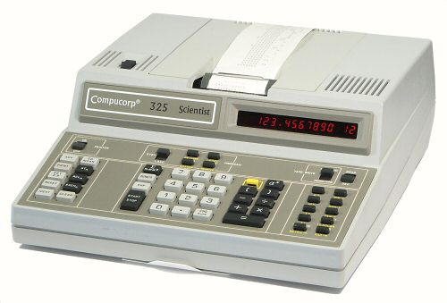
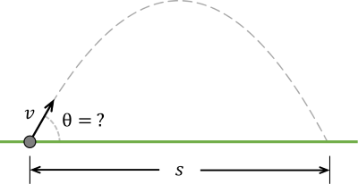
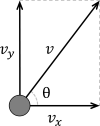
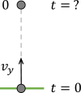
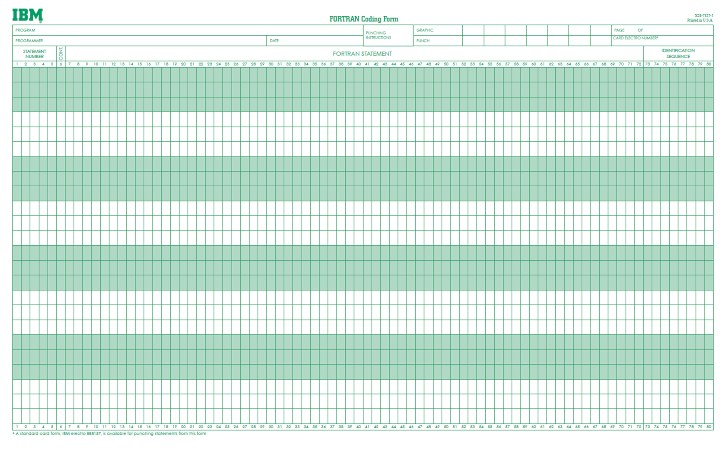

I wrote my first program at the age of 16 in 1975 in
Grade 11 at
Beenleigh State High School
in Queensland, Australia on a CompuCorp 325.
Output was in the form of an 18-character red LED and
a narrow 18-character drum printer
that could noisily and slowly print in black and red ink.
It wasn't intended for use by students, but I managed to get permission to
teach myself how to program it.
My first programs were, of course, games.

One of my first programs
was a projectile game in which the player is given a random target distance $s$ and has to enter the
barrel angle $\theta$ for a cannon with fixed muzzle speed $v$ (see the diagram above),
and must hit the target with three shots. Since the player is not told the muzzle speed,
which changes randomly with each target, they must experiment and estimate
the correct angle based on the distance that they missed by.


Coding up this game requires simple quadratic equations that even an 11th grader should know.
Let $v_y = v \sin \theta$ be the magnitude of the vertical component of the muzzle velocity
(see the diagram at left).
If the projectile is fired upwards with muzzle velocity $v_y$,
it reaches its highest point (see the diagram at right) when
$v_y - gt = 0$ where $g = 9.8 \mbox{m/sec/sec}$, that is, when $t = v_y/g = v \sin \theta/g$.
Therefore, the projectile's time in flight is $2t = 2 v \sin \theta/g$ seconds.
The projectile travels a horizontal distance of $h = 2v_x t = 2 v^2 \cos \theta \sin \theta/9.8$ meters.
If $h$ is close enough to $s$, then it's a hit. Otherwise, tell the player that they've missed
by $h - s$ meters.
Another of my first programs was a variant of the game of Nim.
There are many variants of this game (see, for example, Wikipedia),
but I can't remember exactly which one it was. I remember learning the winning
strategy from a book that was in the Beenleigh public library in 1975, but again
I can't remember exactly which book that was either.
At the end of 11th grade I attended a summer programming camp at the
University of Queensland.
This was some time between December 1975 and February 1976 (southern hemisphere, remember).
There I learned to program in FORTRAN IV using flowcharts. I didn't actually come anywhere
near a computer. Instead, we programmed on coding forms that looked something like these:

Our program forms were typed up on punch cards overnight
by "professional" data entry personnel whose primary purpose seemed to be
the adding of random compile time errors to each card deck.
The card decks were submitted to the university's DEC PDP KA-10 overnight and
the output was delivered to us the next morning.
This didn't work very well because it meant
that we could only compile once per day, and the data entry staff were apparently
a group of chimpanzees wearing boxing gloves.
The hardest thing we had to program was computing binomial coefficients.
FORTRAN IV doesn't have recursion, so it wasn't a trivial problem for a 16 year old.
I didn't know about Pascal's triangle at the time, either.
Remember, the internet didn't exist then, so we couldn't just look things up.
I remember that my solution was hopelessly Byzantine but I never got to see whether it worked
or not because of the chimpanzees in boxing gloves thing.
I'm pretty safe in guessing that it failed miserably.